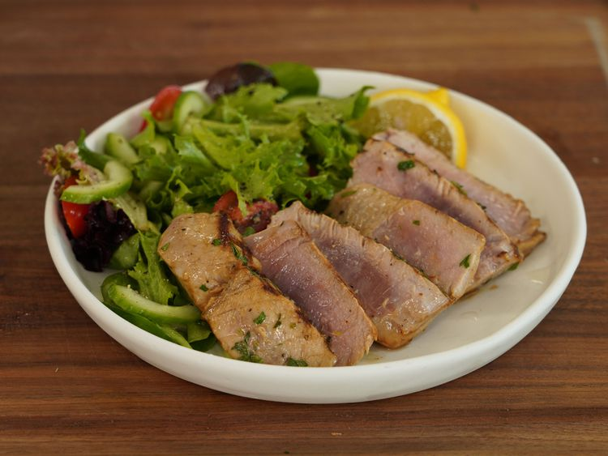

Tuna Steak

Description
This tuna steak recipe is impressive enough for company, but surprisingly easy to make.
Ingredients
- ¼ cup orange juice
- ¼ cup soy sauce
- 2 tablespoons olive oil
- 2 tablespoons chopped fresh parsley
- 1 tablespoon lemon juice
- 1 clove garlic, minced
- ½ teaspoon chopped fresh oregano
- ½ teaspoon ground black pepper
- 4 (4 ounce) tuna steaks
Cooking Steps
- Mix orange juice, soy sauce, olive oil, parsley, lemon juice, garlic, oregano, and pepper together in a large non-reactive dish until well combined. Place tuna steaks in marinade and turn to coat. Cover the dish with plastic wrap and marinate in the refrigerator for at least 30 minutes.
- Preheat an outdoor grill for high heat and lightly oil the grate. Remove tuna steaks from the marinade and shake off excess; reserve marinade for basting.
- Cook tuna steaks on the preheated grill for 5 to 6 minutes; flip steaks and baste with reserved marinade. Cook for an additional 5 minutes, or to desired doneness. Discard any remaining marinade.